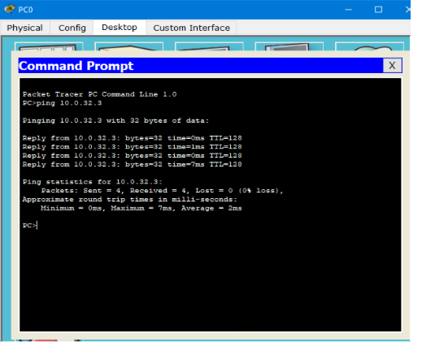

La empresa de Barcelona "Los Laures" nos han pedido nuestros servicios para la creación de subredes, debido a que su equipo de técnicos informáticos no tiene conocimientos suficientes sobre este tema.
La empresa nos ha asignado la dirección IP 10.0.0.0/10, teniendo 300 secciones a las que deben dar cobertura, con 500-600 usuarios cada una, un departamento tiene 1000 usuarios de máximo
1Identificamos la clase, la máscara, y número de bits de subred
Paso 1: Submascara: 255.192.0.0 (con los 10 bits que nos indica la IP)
Paso 2: 2^n - 2 >= 300; n = 9 bits de subred
Paso 3: Sacamos la nueva submascara: 255.255.224.0 (añadiendo los 9 bits de subred a los 10 que ya nos daban) Entonces la nueva IP quedaria de la siguiente forma: 10.0.0.0 /19
2Ahora realizamos el calculo de subredes que nos han pedido
Ahora mediante el calculo en binario, hemos realizado la siguiente tabla que nos servirá para configurar el router y las 300 subredes que nos han pedido, siendo el resultado la siguiente imagen:
Elegimos las dos primeras subredes y la ultima para que nos sea mas facil a la hora de configurar
3Configuramos la primera subred y mas tarde las demás
En la siguiente imagen se muestra como configuramos la Fa 0/1 del router con la ip correspondiente y su máscara:
Despues configuraremos cada uno de los PCs, en este caso pondremos el PC0 de ejemplo:
Una vez completa la configuracion de los PCs, lo comprobamos haciendo un ping entre el PC0 y el PC1 ya configurados
